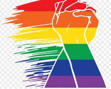

A desigualdade de gênero ocorre quando há privilégio de um gênero em detrimento de outro, ou outros. Historicamente, os direitos e vontades do homem se sobrepuseram aos das mulheres e pessoas não-binárias. Essa diferença está enraizada em nossa sociedade sob a forma do machismo, muito em função de uma cultura patriarcal ultrapassada. Isso porque a estrutura familiar e as relações sociais antigas colocavam o gênero masculino no lugar mais elevado da pirâmide social. Os homens trabalhavam fora, tomavam as decisões e impunham suas vontades às suas esposas e filhos. Entretanto, desde crianças, também fomos ensinados a diferenciar as pessoas pelo gênero, o que reforça o preceito de que é preciso rotular as pessoas e, consequentemente, prejulgá-las.
O movimento LGBTQIAPN+ desempenha um papel de extrema importância na sociedade. Ao longo das últimas décadas, esse movimento tem trabalhado para promover a igualdade de direitos e combater a discriminação e o preconceito enfrentados por pessoas com diferentes orientações sexuais e identidades de gênero.  A luta tem sido fundamental para construir uma sociedade mais inclusiva, onde todas as pessoas possam viver autenticamente, sem medo de perseguição ou discriminação. Além disso, o movimento LGBTQIAPN+ atua na conscientização e educação da sociedade sobre questões relacionadas à diversidade sexual e de gênero.
Acabar com a desigualdade de gênero é uma meta importante e complexa que requer esforços coordenados em várias frentes, incluindo políticas públicas, educação, conscientização e mudanças culturais. Aqui estão algumas estratégias que podem ajudar a diminuir a desigualdade de gênero: 1. **Educação igualitária:** garantir educação igualitária à educação de qualidade para todos, independentemente do gênero. Isso envolve eliminar estereótipos de gênero nas escolas e promover a participação de meninas e mulheres em áreas como ciência, tecnologia, engenharia e matemática. 2. **Empoderamento econômico
veja o video